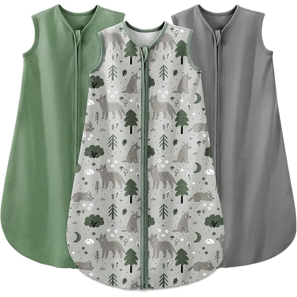
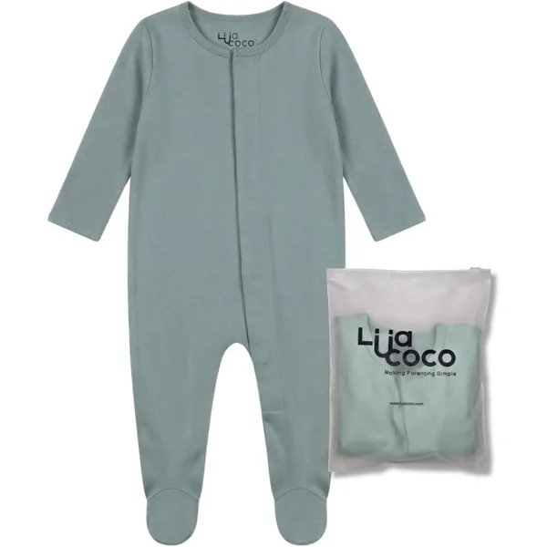
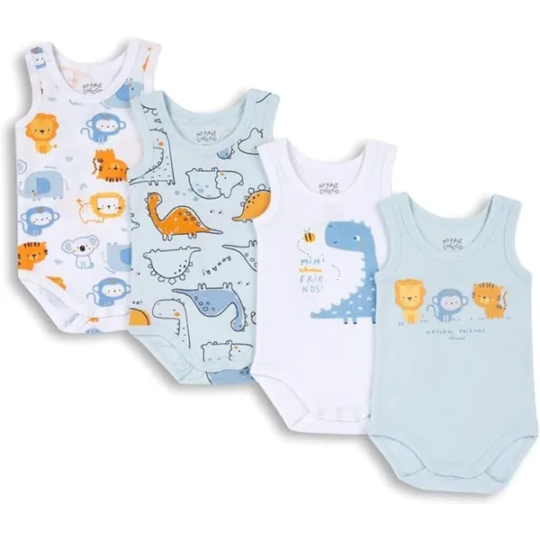
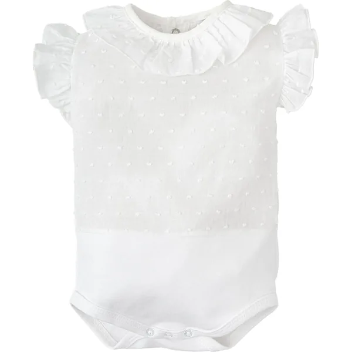

Guia de compras para bebés
Enxoval de Bebé:
as peças que valem a pena
Peças escolhidas com critério, para decidires em minutos em vez de horas.
- Entrega grátis em PT
- Critérios públicos
- Sem colocações pagas

As Nossas Escolhas
Seis peças que recomendamos sem hesitar — e a razão concreta de cada uma.
Os links abaixo são links de afiliado da Amazon. Se comprares através deles recebemos uma pequena comissão, sem custo adicional para ti. Nenhuma marca paga para aparecer aqui — vê os nossos critérios.
Tabela comparativa6 produtos
| Produto | Melhor para | Material | Tamanhos | Preço | Link para a Amazon |
|---|---|---|---|---|---|
| Pack 6 Bodies + CalçasChicco | O enxoval base | 100% algodão | RN–24M | €€ | Ver na Amazon |
| Saco de Dormir 1.5 TOGYoofoss | Noites de 18–22 °C | Viscose de bambu | 0–36M | €€ | Ver na Amazon |
| Pijama Algodão OrgânicoBurt's Bees Baby | Pele sensível | Algodão orgânico | RN–9M | €€ | Ver na Amazon |
| Pack 4 Bodies sem MangasChicco | Verão e camada interior | 100% algodão | RN–12M | € | Ver na Amazon |
| Body Plumeti com FolhoBABIDU | Batizados e fotografias | Algodão plumeti | 1–24M | €€ | Ver na Amazon |
| Pack 5 Bodies OrgânicosPré Natal | Quem quer certificação GOTS | Algodão orgânico GOTS | RN–24M | €€ | Ver na Amazon |

Saco de Dormir 1.5 TOG Raposa
- Viscose de bambu
- 1.5 TOG
- 0–36M
Porque escolhemos: 1.5 TOG é o valor que serve a maior parte do ano em Portugal. O bambu transpira melhor que o polar em quartos sem ar condicionado.
Ver na Amazon
Pijama Algodão Orgânico com Fecho
- Algodão orgânico
- Fecho integral
- RN–9M
Porque escolhemos: o fecho de cima a baixo poupa uma luta inteira nas mudas de fralda noturnas. Algodão orgânico certificado, sem acabamentos químicos.
Ver na Amazon
Pack 4 Bodies sem Mangas 100% Algodão
- 100% algodão
- Pack de 4
- RN–12M
Porque escolhemos: a opção mais barata da lista e a que mais se usa no verão português. Abertura em envelope no pescoço — tira-se por baixo quando há acidentes.
Ver na Amazon
Body Exterior sem Mangas Plumeti com Folho
- Algodão plumeti
- Peça exterior
- 1–24M
Porque escolhemos: o corte ibérico clássico que se vê nos batizados. É peça de ocasião, não de dia a dia — e a este preço, uma alternativa sensata às lojas de criança.
Ver na Amazon
Pack 5 Bodies Orgânicos Manga Curta e Longa
- Algodão orgânico
- GOTS
- Pack de 5
Porque escolhemos: certificação GOTS a sério, que cobre o cultivo e o processamento. Para quem reage mal a acabamentos químicos, é o pack mais seguro desta lista.
Ver na AmazonO que NÃO precisas de comprar
Metade do que aparece nas listas de enxoval nunca chega a ser usado. Estas são as compras que dizemos para saltares.
- Sapatos para recém-nascido. Não andam. Caem o dia todo e não aquecem melhor do que um par de meias.
- Roupa de tamanho RN em quantidade. Muitos bebés saem do tamanho RN em três ou quatro semanas. Dois ou três conjuntos chegam.
- Protetores e almofadas de berço. Desaconselhados para o sono seguro no primeiro ano. Um saco de dormir aquece sem deixar nada solto no berço.
- Esterilizador elétrico de chupetas. Água a ferver durante cinco minutos faz o mesmo. É espaço de bancada que não vais recuperar.
- Casaco grosso na cadeira auto. O volume impede o cinto de apertar bem. Aperta o cinto e põe o casaco por cima, como manta.
Explora por Categoria
Quem está por trás do Baby Bazaar
Sou o Tiago, pai de dois, em Lisboa. Criei este site depois de perder noites a comparar bodies em vinte separadores do browser. Não tenho loja nem stock: seleciono, pesquiso e escrevo — e a Amazon paga-me uma comissão se comprares através dos meus links. Mais sobre mim e sobre o método.
Os nossos critérios
Quatro regras fixas. Um produto que falhe qualquer uma delas não entra no site.
Entrega grátis em Portugal
Só entram produtos disponíveis na Amazon.es com entrega gratuita para Portugal continental
Avaliações excelentes
Verificamos a página do produto antes de o incluir, e voltamos a verificar em cada revisão do site
Materiais declarados
Preferimos fibras naturais e composições indicadas; ficam de fora os produtos que não dizem de que são feitos
Sem lugares pagos
Nenhuma marca pode pagar para aparecer aqui. A comissão da Amazon é a mesma seja qual for o produto